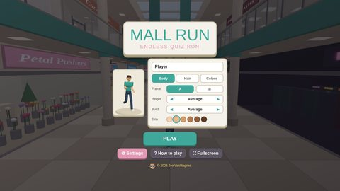
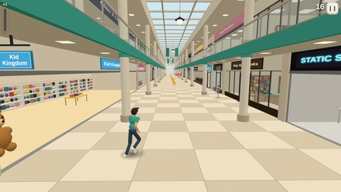
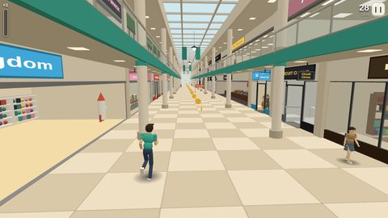
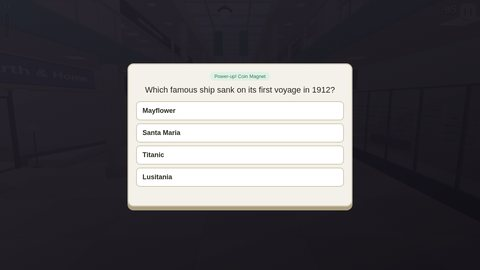

Learning game · HTML / JavaScript
Mall Run
An endless 3D runner quiz, built to turn software training review into something people want to replay.
Customize a runner, then dash through mall hallways, a movie theater, the food court, and a parking garage: grab coins, jump the ropes, slide under banners, and turn at every junction. Glowing orbs are power-ups you earn by answering a quick trivia question (Double-Jump even flips you up to the upper level), and if you crash, one harder question is your chance to keep running.
This demo: easy general trivia (geography, science, animals, history, and more). In training, the same engine quizzed learners on workforce-management reporting.
Controls: Left/Right or A/D to switch lanes, Up, W, or Space to jump, Down or S to slide, press the arrow’s direction to turn at a junction, and P or Esc to pause. On a phone or tablet, swipe instead.
Tip: click inside the game first so it can detect your keyboard. On a small screen, try the full-screen version.
Screenshots








Design features
Make your own quiz game!
Type in your own multiple-choice questions and get a copy of Mall Run that asks them instead. Save it to your desktop and double-click to play, send it to your students or team, or put it on your own website. Each question can have 2 to 4 answer choices; click the circle next to the right one.